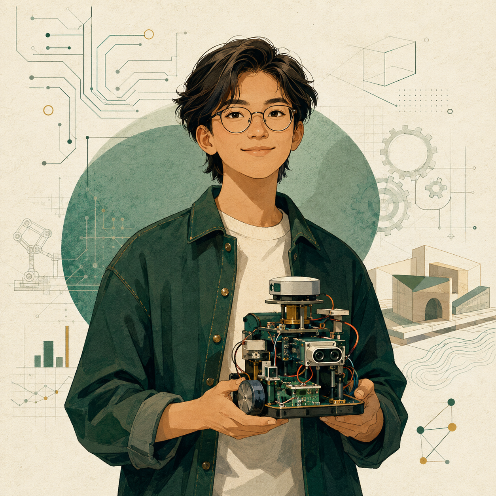

Systems Integrator
You connect parts, people, and evidence into a working whole.
Your profile is unusually balanced. You are comfortable moving between technical work, problem framing, collaboration, and communicating decisions—especially when a project needs its pieces to work together.
This is not a professional rank. It is a formative snapshot based on self-reported behaviours, technical experience, and project context.

Balanced breadth
All six competency areas are currently strong, with no single mode dominating the profile.
Integrating
Able to coordinate interfaces across people or subsystems.
Bridge the gaps
Help a team connect specialist work into a coherent solution and decision.